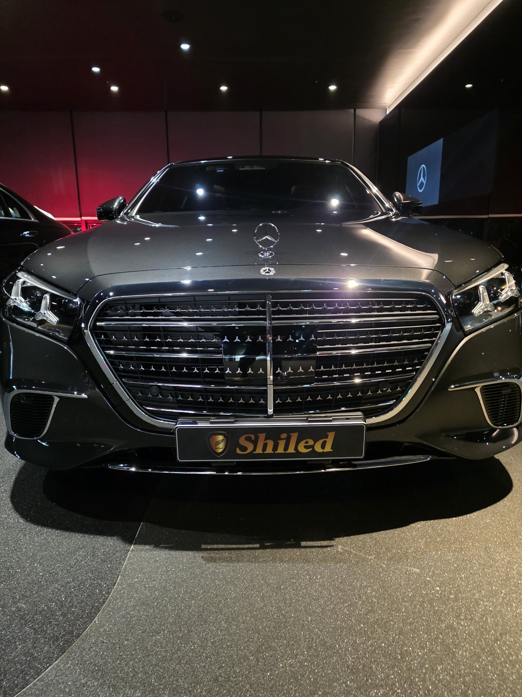
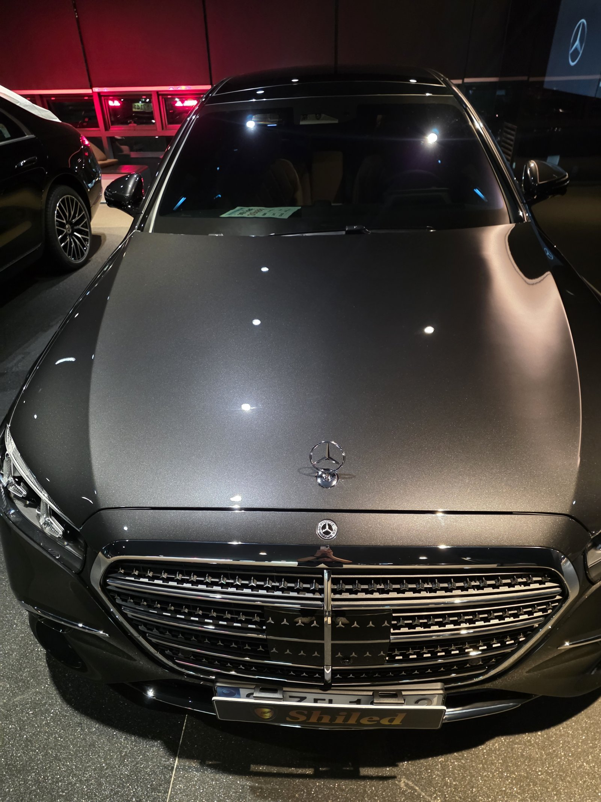
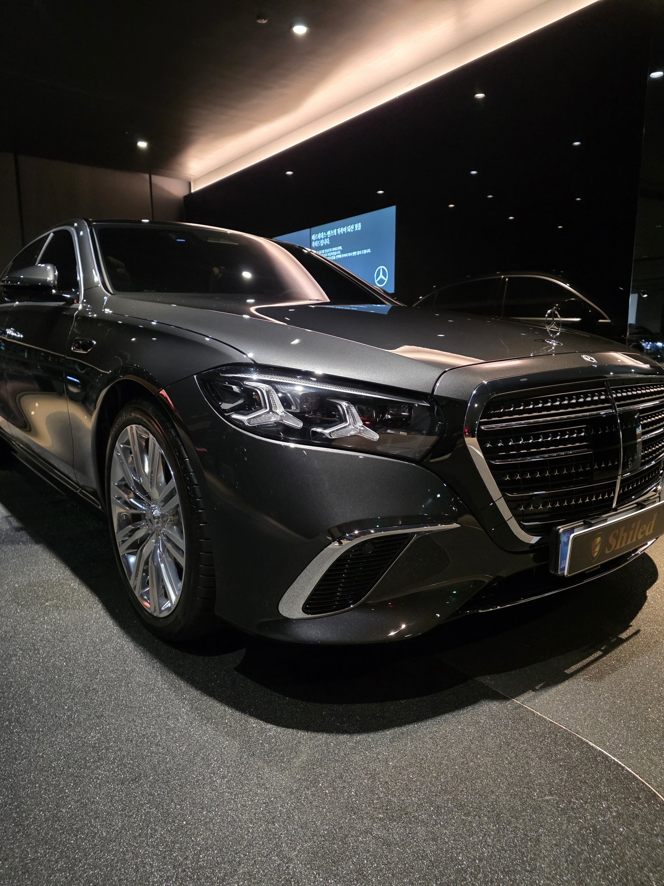
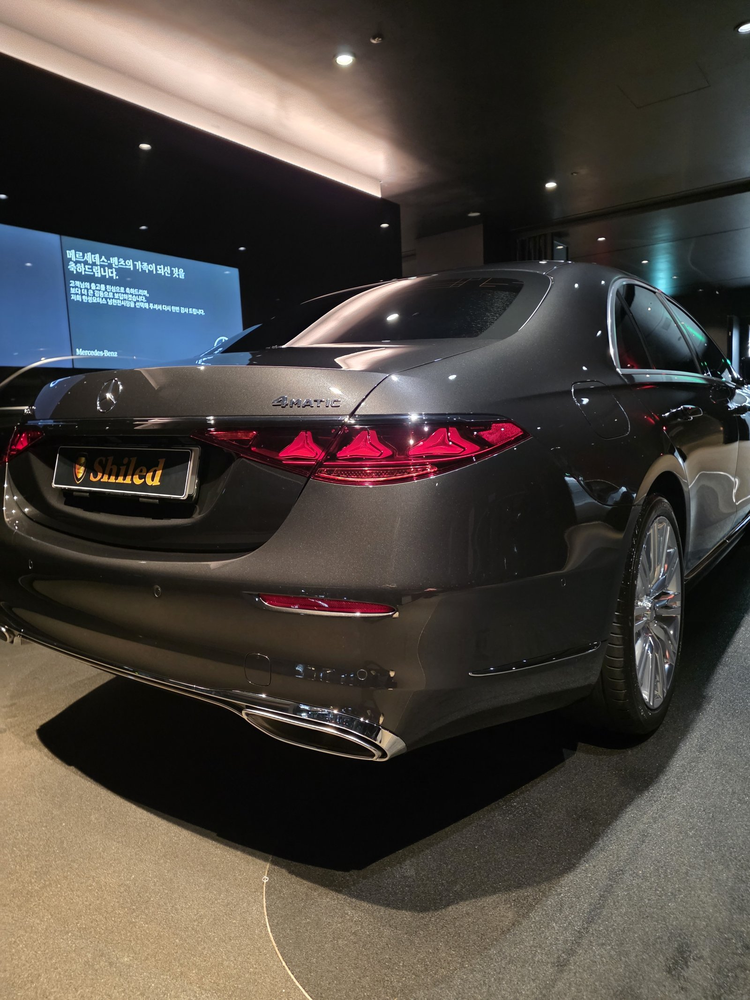
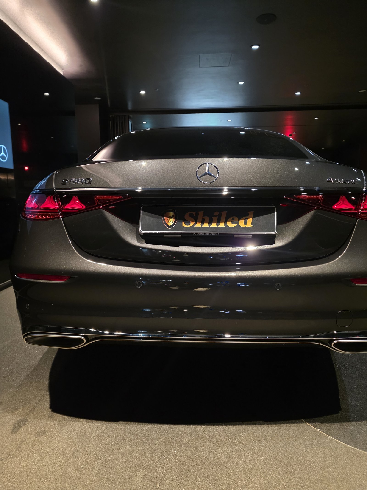
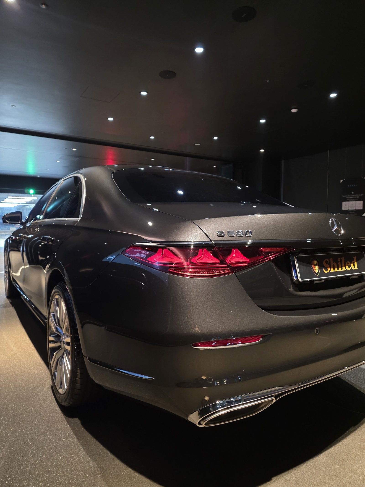
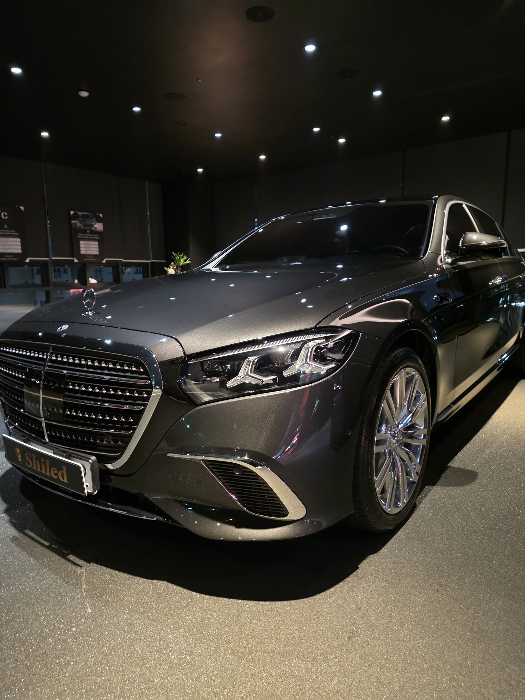
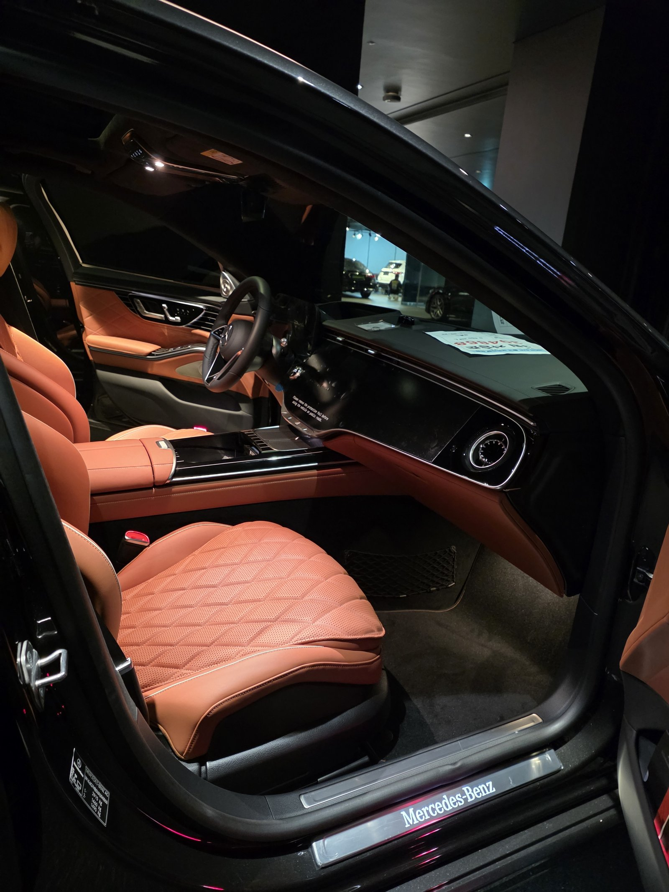
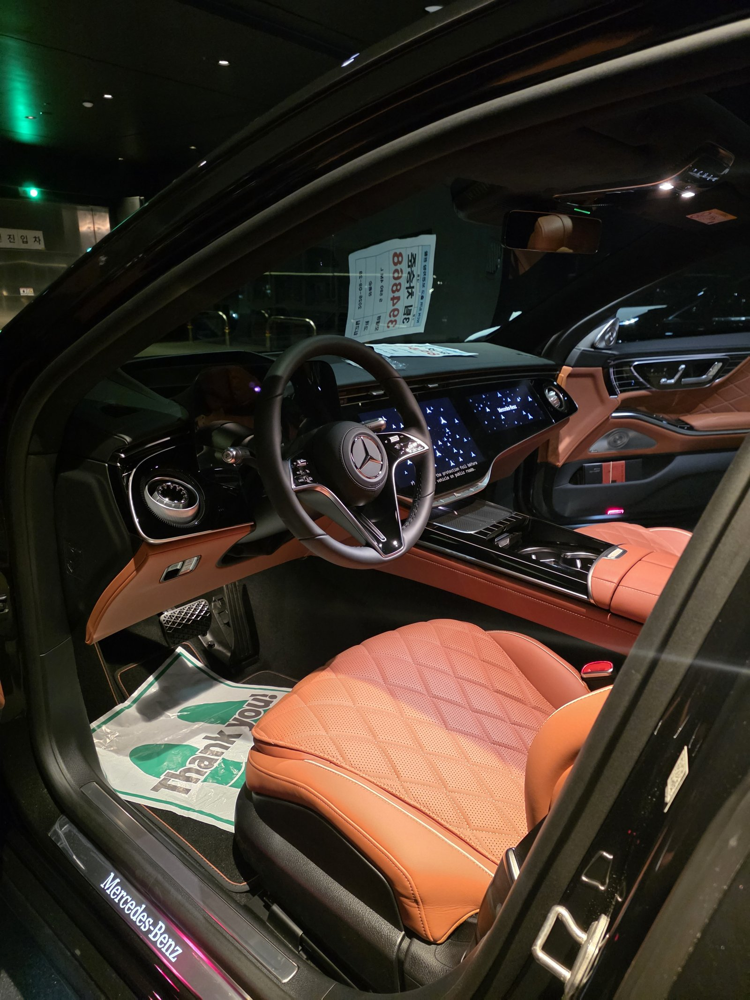
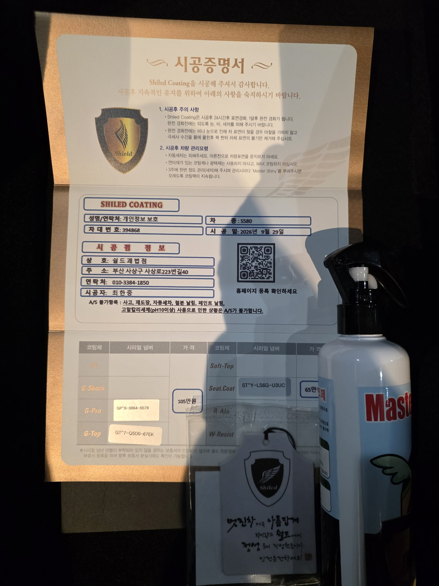

벤츠 S580, 그레이입니다.
외장은 듀얼코팅, 실내는 브라운 가죽 시트코팅까지 함께 진행했습니다.
이날 작업한 S클래스 다섯 대 중 부산 유리막코팅 구성이 가장 무거운 차였습니다.

듀얼코팅은 무엇을 겹치나요?
듀얼코팅은 G-PRO 위에 G-TOP을 올리는 조합입니다.
G-PRO는 경도, 즉 스크래치 내성에 특화된 하드코팅입니다.
G-TOP은 발수와 방오, 오염을 밀어내는 쪽입니다.
아래층이 버티고 위층이 밀어내는 구조라 두 장점을 함께 가져갑니다.


S580 그레이에 듀얼코팅을 고른 이유
듀얼코팅은 색감 하나보다 표면을 오래 지키는 쪽에 무게를 둔 구성입니다.
S580처럼 오래 두고 타실 차에 잘 맞습니다.
그레이는 오염이 덜 드러나는 색이라 발수·방오와도 궁합이 좋습니다.
코팅제는 대표가 직접 개발·제조한 제품입니다.

기술자의 팁
듀얼코팅은 층을 겹치는 만큼 아래층이 자리 잡을 시간을 지켜야 합니다. 서두르면 두 층이 제대로 붙지 않습니다. 겹쳐 올리는 코팅일수록 공정 사이 기다림이 결과를 좌우합니다.



브라운 가죽 시트는 왜 코팅하나요?
밝은 브라운 가죽은 청바지 이염과 손때가 잘 드러납니다.
한 번 스며든 오염은 클리닝으로도 완전히 빠지지 않는 경우가 있습니다.
시트코팅은 가죽 표면에 보호층을 만들어 오염이 스며드는 것을 줄여줍니다.
새 가죽일 때 해두는 것이 가장 효과적입니다.


시공증명서를 함께 드립니다
모든 시공 차량에 시공증명서를 드립니다.
차종·시공일·코팅제 시리얼 번호가 적혀 있고, 홈페이지에 등록해 보증을 받으실 수 있습니다. 이 차는 듀얼코팅(G-PRO+G-TOP)과 시트코팅으로 기록돼 있습니다.

차종·시공일·코팅제 시리얼이 기재된 시공증명서
자주 묻는 질문
Q. 듀얼코팅은 어떤 조합인가요?
A. G-PRO와 G-TOP을 겹치는 조합입니다. G-PRO가 스크래치 내성을, G-TOP이 발수·방오를 맡습니다.
Q. 시트코팅은 언제 하는 게 좋나요?
A. 가죽이 새것일 때가 가장 좋습니다. 오염이 스며들기 전에 보호층을 만들어 두는 것이 핵심입니다.
Q. 싱글코팅과 듀얼코팅 중 무엇을 고르나요?
A. 색감이 우선이면 F5 같은 싱글코팅, 스크래치 내성과 발수를 함께 원하시면 듀얼코팅을 권합니다.
Q. 코팅 후 세차는 언제부터 하나요?
A. 코팅이 자리 잡을 시간이 필요하므로 시공 직후 강한 세차는 피하는 것이 좋습니다. 정확한 시점은 인도할 때 안내해 드립니다.
Q. 쉴드광택 위치와 예약은 어떻게 하나요?
A. 부산 남구 유엔로220 1F 쉴드광택입니다. 예약·상담은 010-3384-1850, 대표 최한중이 직접 상담하고 책임 시공합니다.
새 차일수록 시작점이 다릅니다. 가장 깨끗할 때 입혀두십시오.
제품을 직접 만드는 사람이 직접 시공합니다.
부산에서 신차 유리막코팅을 고민 중이시면 편하게 연락 주십시오.
어떤 차를 타냐보다 어떻게 타냐가 중요합니다~!
시공 중에는 전화를 받지 못할 때가 많습니다.
카카오톡으로 차종과 원하시는 시공을 남겨주시면 확인 후 답변드립니다.
쉴드광택 · 부산 남구 유엔로220 1F · 대표 최한중